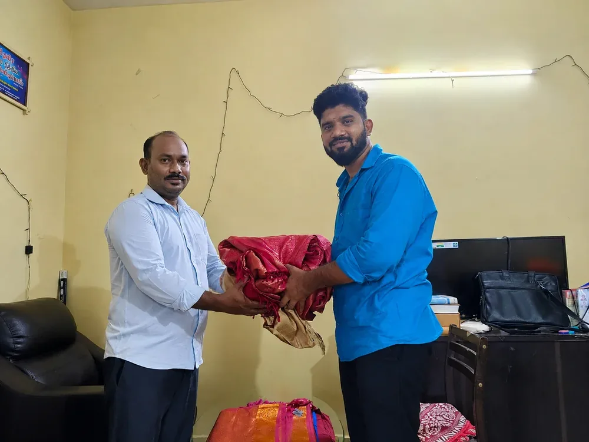
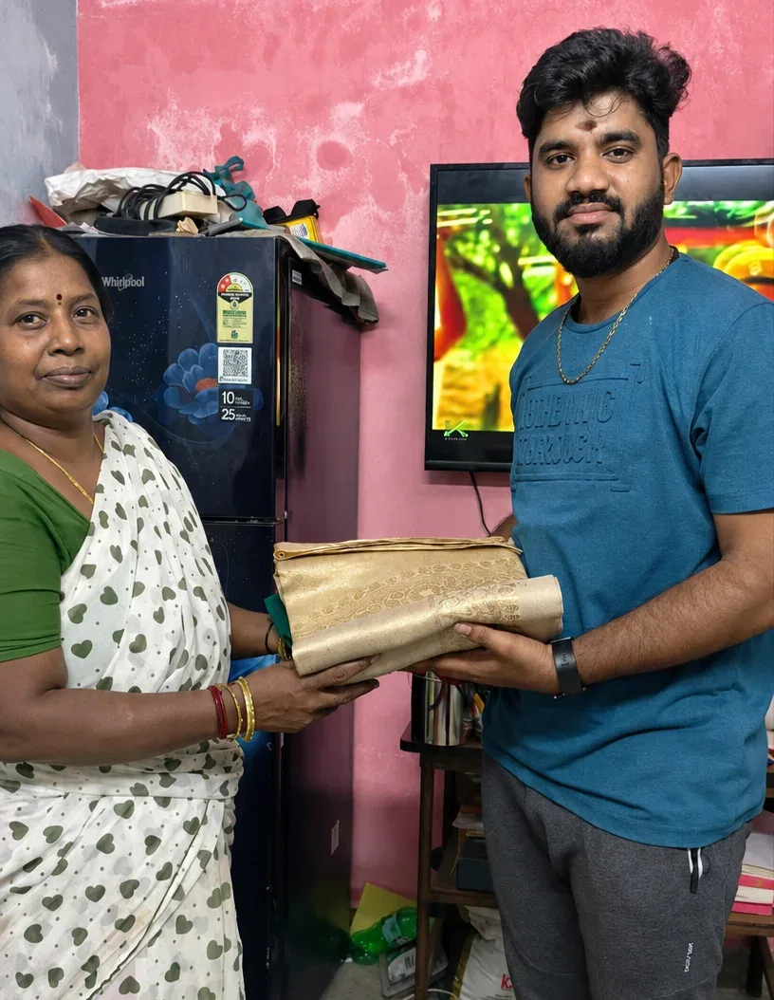
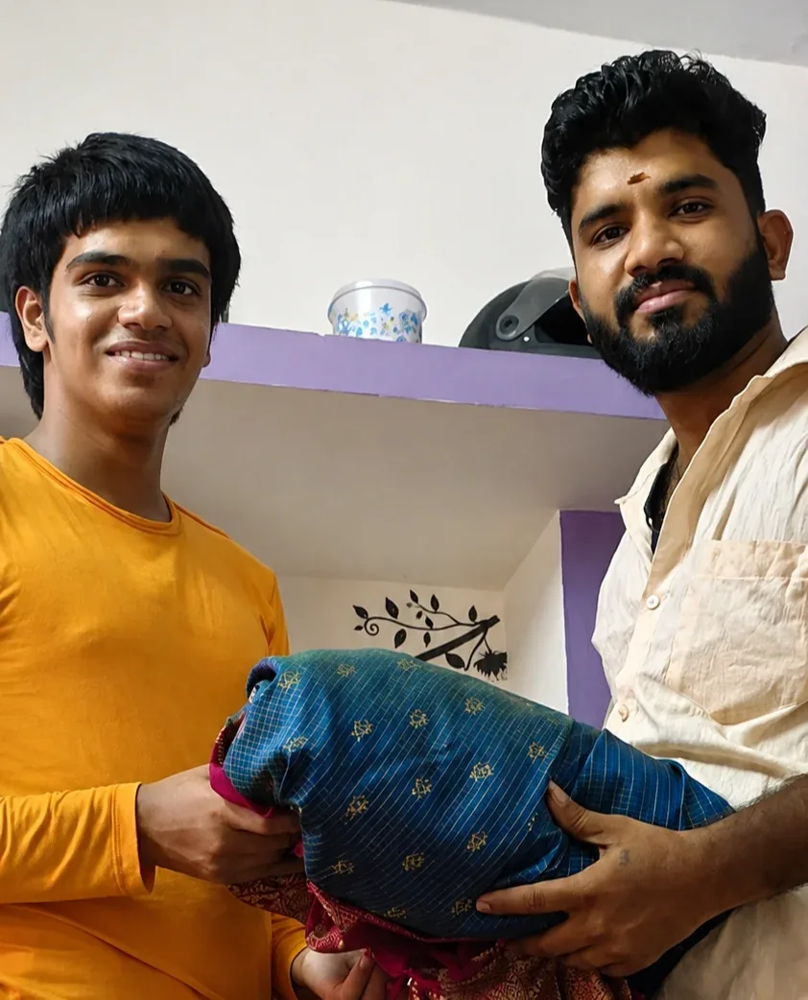
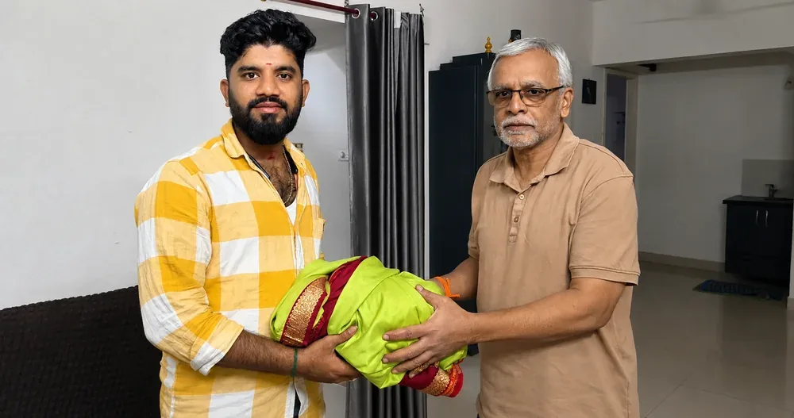
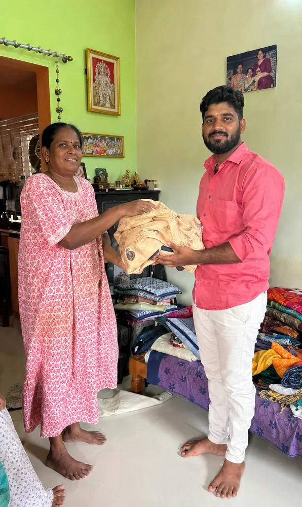
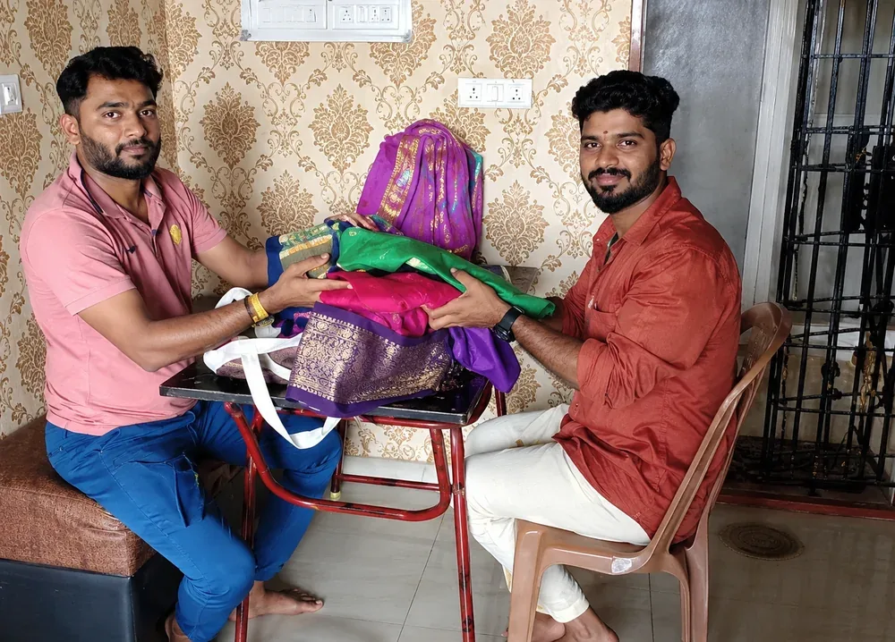
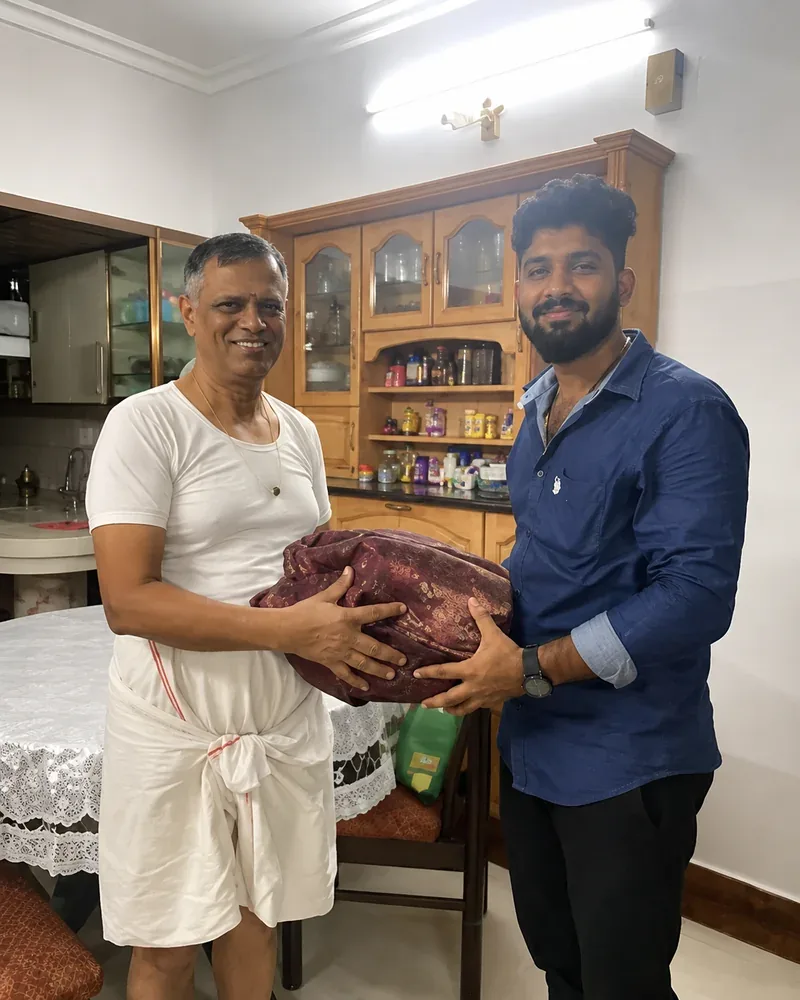
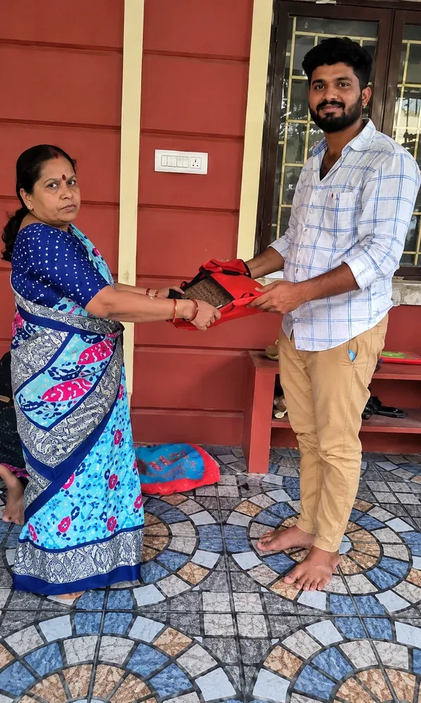

Sell Your Old Pattu Sarees for the Price They Deserve
Chennai's trusted old silk saree buyers. Honest valuation, doorstep pickup, and cash in hand — the same day you call, at omsairampattusaree.com

OM Sairam Pattu Center
The Best Old Pattu Saree Buyers in Chennai for Cash Exchange, At OM Sairam Pattu Center, we are proud to offer the best prices for your old silk sarees in Chennai. With over 40+ years of experience in the industry, we have earned a reputation as one of the top old pattu saree buyers in Chennai. Whether you're searching for old silk saree buyers near me or simply want to sell old silk sarees for cash, we make the process simple and transparent.
We accept all types of damaged and old pattu sarees, including wedding silk sarees, old Arani silk sarees, old handloom silk sarees, old Mysore silk sarees, Banaras sarees, old pattu veshtis, silk blouses, Khadi silk sarees, old zari sarees, and much more. Unlike other silk saree buyers in Chennai, we offer doorstep pickup and on-the-spot cash, Sell your old silk sarees to us and get the right price. If you've been wondering where to sell old pattu sarees or who the trusted second hand silk saree buyers near you are, OM Sairam Pattu Center is your answer.
Learn Our Story →Steps To Sell Your Old Silk Sarees
Contact Us
Give us a call or Enquire on WhatsApp about our availability. Provide the complete address for the place of pick up or you can also share your location on WhatsApp.
Arrival for Pickup
After providing the address our executive will arrive at your location within 12 Hours. The person is completely vaccinated for your safety. Kindly keep ready your old silk sarees before arrival.
Testing Silk Quality
Our old pattu saree buyers will test the silk quality through a few methods for validating the correct cash for your silk product. We guarantee to give the best price for an old pattu saree in Chennai after making some quality checks.
On Spot Cash
After validating the right price for your old silk saree or any other silk clothes, our old silk saree buyers will give on the spot cash in your hands without any further delays. We are the best old pattu saree buyers in Chennai to get old silk sarees for cash.
Why Choose OM Sairam Pattu Center?
Experience hassle-free selling of your vintage pattu sarees with trusted experts and guaranteed fair prices in Chennai — whether you're looking to sell used pattu sarees or resell old silk sarees for cash.
- Trusted Expertise
- Accurate Price
- Sell Within 24 Hours
- On-the-Spot Payment

Book a Doorstep Pickup
Fill in your details and our team will call you shortly.
We've received your request and will call you shortly to arrange pickup.
Sarees We've Purchased From Our Customers
A glimpse of the silk heirlooms Chennai families have trusted us to value fairly.








Our Recent Article Publications
Trusted coverage from India's leading news platforms.
Every Kind of Old Silk, Welcome
We're also active old zari saree buyers in Chennai, so don't let a worn or discoloured zari piece sit unused — old zari saree resale is worth more than you'd think.
Also have old shirts, jeans, bedsheets or blankets lying around? We buy those too, as your old cloth buyer in Chennai →
What Our Customers Say
"We are from an outer Chennai location, and we searched online for a good old pattu saree selling place and found OM Sairam Pattu Centre in Mogappair. Mr. Hariharasudhan helped us and sold the sarees at a good price. Worth the visit."
"Received a good amount for my old silk saree from Mr. Hariharasudhan of OM Sairam Pattu Saree Centre, who fixed an appointment and came for a home visit to check the saree. He paid me spot cash and also gave tips on how to buy a silk saree."
"Excellent service. Special thanks to Hariharasudhan, who takes personal care in evaluating every saree and gives a reasonable price for all of them. Thank you, Hari."
"I was satisfied with the service. The person arrived on time, checked my saree carefully, and offered the best rate. Payment was done immediately. Thank you for the hassle-free experience!"
"Polite behaviour. Justified price for old silk sarees. Incomparably high returns when compared to other places. God bless him and family."
"I sold my grandmother's old saree to these old silk saree buyers. They provided the best rate for sarees and came for quick pickup. I am very happy to sell and make a deal with them and will recommend others to sell here."
"OM Sairam Pattu Saree Buyers have the best customer service. Comparing to other old pattu saree buying centres, they provide the best price for damaged pattu sarees."
"OM Sairam Pattu Center is the best place in Chennai to sell your old pattu sarees. I recently sold my wedding pattu pudavai here, and the experience was excellent. Mr. Sudhan was kind person and gave right price for my sarees."
"If you are searching for where to sell old silk sarees in Chennai, I will definitely recommend contacting OM Sairam old pattu saree buyer. Their salesperson was very decent and well mannered. They gave me the best cash for my old silk sarees and blouses."
"I had been searching for old pattu saree buyers in T Nagar for a long time. Then, I came across OM Sairam Pattu Center and decided to sell my sarees to them. The experience was smooth, and they offered a fair price. I highly recommend them to anyone in and around T Nagar looking to sell their pattu sarees."
"At last, I found the best old pattu saree buyers near me. I was residing in Anna Nagar, for many days I was searching for an honest old pattu saree buyers in anna nagar Then contacted OM Sairam pattu center, They gave the right price for my old silk dhotis."
Old Pattu Saree Buyers in Chennai
Old silk sarees take up space and lose value sitting in a cupboard. OM Sairam Pattu Center buys them at fair, transparent prices with pickup right at your door, anywhere in Chennai.
We are available every day from 9 AM to 8 PM. For urgent sales, we can arrange an earlier appointment on request.
You're free to decline. There is no obligation and no fee for the appointment or the valuation.
No. We only fix a physical appointment — payment happens in cash, in your hands, at the moment you agree to our offer.
Instead of letting them sit unused, you can exchange old pattu sarees with us for cash. We give fair market value for silk of any age or condition.
Call or message us with a few photos of your saree. We give you an estimated price range, then arrange free doorstep pickup and pay cash on the spot once you agree.
We buy all types of old and second-hand silk sarees, including wedding silk sarees, Arani silk, handloom silk, Mysore silk, Banarasi sarees, silk veshtis, blouses, and Khadi silk.
Value depends on silk purity, age, condition, and current market demand. Share a few photos with us and we'll give you an honest estimate before any pickup is arranged.